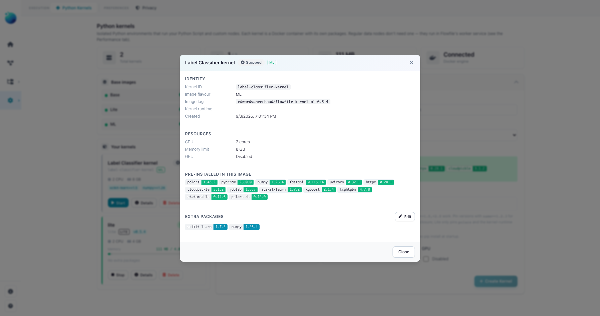
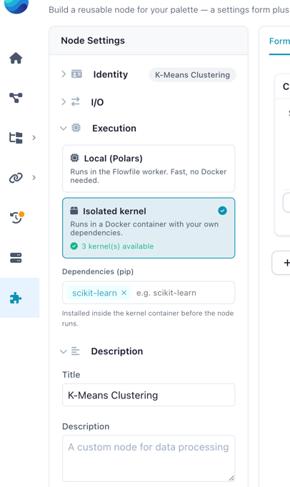
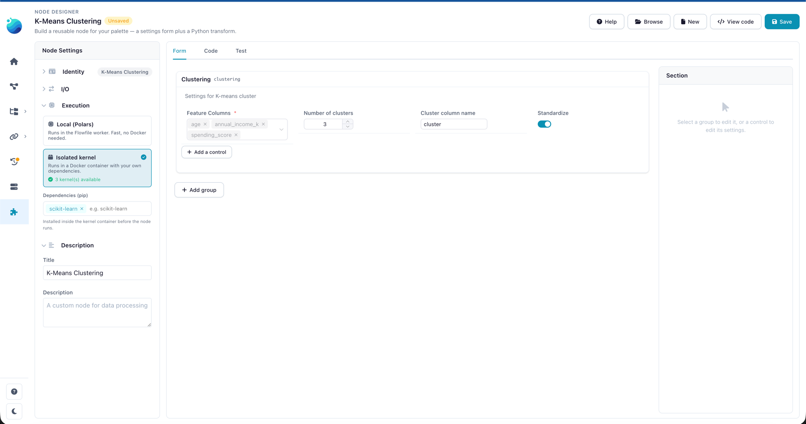
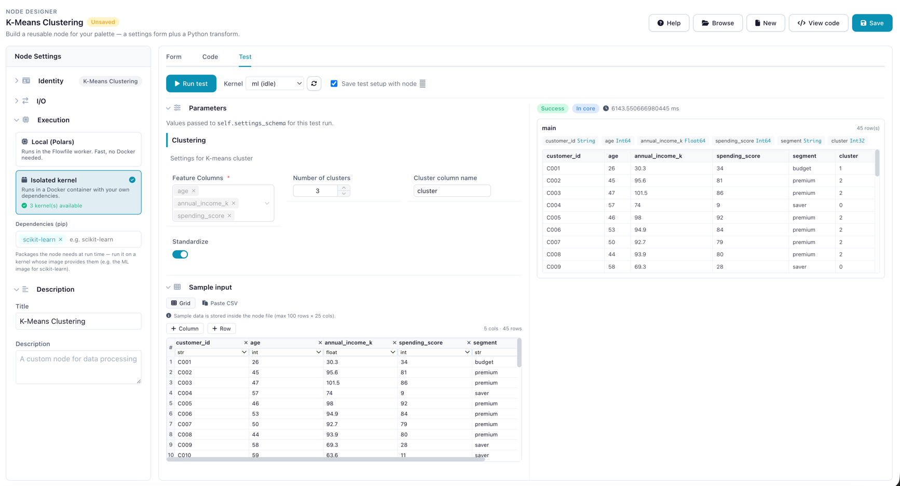
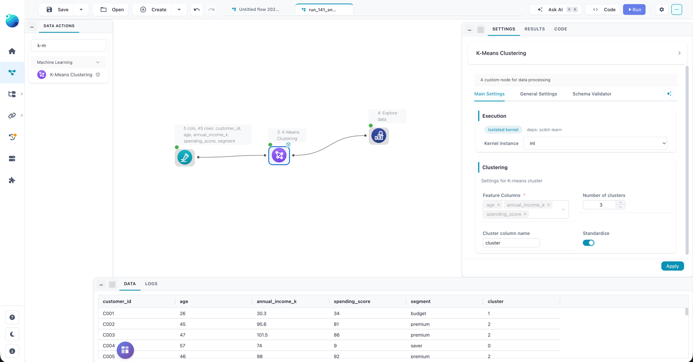
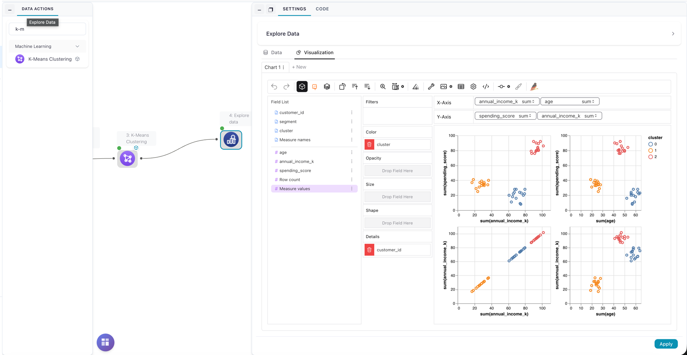

Tutorial: K-Means on a Kernel
This tutorial builds one custom node that runs K-Means clustering over the numeric columns you choose, using scikit-learn inside an isolated kernel. It's the kernel counterpart to the local-execution Emoji Generator tutorial — same shape, but the process method reaches for a third-party library, so it runs on a kernel that provides it.
You'll build the same node two ways:
- Visually, in the Node Designer — no file to write by hand. This is the primary path here.
- As a plain
.pyfile — for version-controlled or programmatic authoring.
The two are interchangeable: a node built in the designer's visual subset saves to a .py file, and that file reopens in the designer. The visual build and the file below are the same node.
What you'll build
A K-Means Clustering node that:
- Lands in the ML palette group.
- Lets the user pick numeric feature columns, the number of clusters
k, an output column name, and whether to standardize features first. - Runs scikit-learn in a Docker kernel and adds a cluster-label column to the data.
Before you start: a kernel with scikit-learn
This node runs its Python in a kernel — a Docker container managed from the Kernel Manager. The kernel you run it on must already have scikit-learn: Flowfile does not install a node's dependencies at run time, but it does check them — the node's kernel picker marks which of your kernels satisfy the requirement and can pre-fill a suitable kernel via Create kernel for this node, and a run on a kernel without scikit-learn fails fast with a clear "missing packages" error. Of the standard kernel images, only the ML flavour ships scikit-learn (along with XGBoost, LightGBM, and statsmodels).
Set the kernel up once (Docker must be running):
- Open the Kernel Manager: Settings → Execution → Python Kernels in the sidebar.
- If the ML image isn't installed yet, click Install next to it in the images panel.
- Click Create new kernel and pick Image flavour → ML; name it something you'll recognize later, like
ml. - Click Start on the new kernel's card and wait for the green Ready badge.
Everything else happens in the Node Designer.
The ML kernel in the Kernel Manager — scikit-learn pre-installed

Why a kernel here?
scikit-learn isn't one of the libraries Flowfile ships with, and a local node can only use what's already installed. A kernel gives the node its own Docker environment that does have it. Need a package no standard image provides? Add it to the kernel's Packages field when you create the kernel — extra packages are baked into the kernel's image.
Build it in the Node Designer
Open Settings → Extensions → Node Designer from the sidebar and click New.
1. Identity
In the left Node Settings panel, under Identity:
- Node Name →
K-Means Clustering - Category →
ML(type it or pick it — this becomes the palette group) - Node Icon → pick anything that reads as clustering/ML.
2. Execution environment
Open the Execution group and choose the Isolated kernel card. A Dependencies (pip) editor appears — add one tag:
scikit-learn
The tag declares what the node needs; it shows on the node's kernel badge so anyone using the node knows to pick a kernel that has it — your ML kernel does. (If Docker is unavailable, the card explains why and links to the Kernel Manager.)
Execution environment

3. The settings form
On the Form tab, add a group. Give it the display title Clustering and the Python name clustering (this is what you'll type in the code). Then Add a control four times:
| Control | Field name | Configure |
|---|---|---|
| Column Selector | feature_columns |
Data types → Numeric, Multiple on, Required on |
| Numeric Input | n_clusters |
Label "Number of clusters (k)", default 3, min 2, max 20 |
| Text Input | cluster_column |
Label "Cluster column name", default cluster |
| Toggle Switch | standardize |
Label "Standardize features first", default on |
The Clustering group

4. The process logic
Switch to the Code tab. The signature header is fixed — you write the body only. The Form fields panel on the left lists every control with its accessor path; click one to insert it.
from sklearn.cluster import KMeans
from sklearn.preprocessing import StandardScaler
cfg = self.settings_schema.clustering
feature_cols = cfg.feature_columns.value # list[str]
k = int(cfg.n_clusters.value) # a Numeric Input is always a float
label_col = cfg.cluster_column.value
df = inputs[0].collect() # sklearn needs eager data
features = df.select(feature_cols).to_numpy()
if cfg.standardize.value:
features = StandardScaler().fit_transform(features)
model = KMeans(n_clusters=k, n_init=10, random_state=42)
labels = model.fit_predict(features)
flowfile_ctx.log_info(
f"Fitted {k} clusters over {len(feature_cols)} features and {df.height} rows"
)
return df.with_columns(pl.Series(label_col, labels))
Two details in the body are worth a look:
int(cfg.n_clusters.value)— a Numeric Input value is always afloat;KMeanswants anint, so cast it.flowfile_ctx— available directly inside a kernel node'sprocess. Use it for run feedback (log_info), and — see Extensions — artifacts. (flowfile_ctxis not available in alocalnode.)
For Python developers: why the sklearn imports sit inside the code
In the designer you only write the body, so this happens naturally — but it matters when you write the node as a file. Flowfile's core loads the node file to register it in the palette, and core does not have the kernel's dependencies installed. A top-level import sklearn would make the node load with an error; an import inside process runs only in the kernel, which has the package. That's why custom nodes import third-party libraries lazily.
5. Test it
On the Test tab, pick your ML kernel from the Kernel selector — the dry run executes on that kernel, so this choice decides whether from sklearn... works. If the test fails with ModuleNotFoundError: No module named 'sklearn', the selected kernel doesn't have scikit-learn: switch to the ML kernel from Before you start.
Then paste this sample — nine customers in three obvious groups — and click Run test:
customer_id,age,annual_income_k,spending_score,segment
C001,24,27.5,33,budget
C002,26,30.1,38,budget
C003,23,25.8,31,budget
C004,45,95.6,81,premium
C005,47,101.5,86,premium
C006,44,90.2,79,premium
C007,57,74.0,18,saver
C008,60,68.5,22,saver
C009,58,71.3,15,saver
Set the feature columns to age, annual_income_k, and spending_score, and leave k at 3. The output grid gains a cluster column, and the three groups fall into three clusters that line up with the segment label — which the numeric picker leaves alone. You also get the schema, row count, and your log_info line in the Logs panel — the same execution path a real run uses. Tick Save test setup with node to keep the sample and settings in the file.
The Test tab: Kernel selector on the ML kernel, cluster column in the output

6. Save and use it in a flow
Click Save. The node loads immediately — no restart — under the ML group in the palette, with a small kernel badge marking it as kernel-backed. For a fuller dataset than the nine-row test sample, the repo ships customer_segments.csv — 45 customers across the same three segments (budget, premium, saver).
Drag the node onto the canvas, connect the data, and open its settings drawer: next to the Kernel instance picker the drawer shows the node's dependencies (deps: scikit-learn), so pick the ML kernel here too, then run.
On the canvas: ML palette group, kernel picker, and the cluster column

7. Explore the clusters
To see what K-Means found, connect an Explore Data node to the output and open its Visualization tab: plot the feature columns against each other and drag cluster onto Color. With the 45-customer sample from step 6, the three segments separate cleanly.
Feature scatter plots colored by cluster

The same node as a file
If you prefer to write the node directly — to version-control it, or to skip the UI — here is the complete file. Save it as ~/.flowfile/user_defined_nodes/kmeans_clustering.py. Because it stays within the visual subset, it reopens in the Node Designer: this file and the visual build above are the same node.
import polars as pl
from flowfile import node_designer as nd
class KMeansSettings(nd.NodeSettings):
clustering: nd.Section = nd.Section(
title="Clustering",
description="Group rows into clusters from their numeric features.",
feature_columns=nd.ColumnSelector(
label="Feature columns",
data_types=nd.Types.Numeric,
multiple=True,
required=True,
),
n_clusters=nd.NumericInput(
label="Number of clusters (k)",
default=3,
min_value=2,
max_value=20,
),
cluster_column=nd.TextInput(
label="Cluster column name",
default="cluster",
),
standardize=nd.ToggleSwitch(
label="Standardize features first",
default=True,
description="Scale each feature to mean 0 / unit variance before clustering.",
),
)
class KMeansClusteringNode(nd.CustomNodeBase):
node_name: str = "K-Means Clustering"
node_category: str = "ML"
title: str = "K-Means Clustering"
intro: str = "Group rows into k clusters over the numeric columns you choose."
environment: str = "kernel"
dependencies: list[str] = ["scikit-learn"]
settings_schema: KMeansSettings = KMeansSettings()
def process(self, *inputs: pl.LazyFrame) -> pl.LazyFrame:
# Third-party imports live inside process: the kernel has them, core does not.
from sklearn.cluster import KMeans
from sklearn.preprocessing import StandardScaler
cfg = self.settings_schema.clustering
feature_cols = cfg.feature_columns.value # list[str]
k = int(cfg.n_clusters.value) # a Numeric Input is always a float
label_col = cfg.cluster_column.value
df = inputs[0].collect() # sklearn needs eager data
features = df.select(feature_cols).to_numpy()
if cfg.standardize.value:
features = StandardScaler().fit_transform(features)
model = KMeans(n_clusters=k, n_init=10, random_state=42)
labels = model.fit_predict(features)
flowfile_ctx.log_info(
f"Fitted {k} clusters over {len(feature_cols)} features and {df.height} rows"
)
return df.with_columns(pl.Series(label_col, labels))
Not auto-tested
Unlike the greeting example, this node isn't part of the docs test suite — it needs scikit-learn and a running kernel, which the test environment doesn't provide. Run it in the designer's Test tab instead.
Extensions
Once the base node works, two small additions show off what a kernel node can do. Both use the flowfile_ctx API.
Persist the fitted model as a flow artifact, so a downstream node can reuse it:
flowfile_ctx.publish_artifact("kmeans_model", model)
Emit the cluster centroids as a second output. Declare two output names and return a dict (see Multiple outputs):
number_of_outputs: int = 2
output_names: list[str] = ["clustered", "centroids"]
# in process, instead of a single return:
centroids = pl.DataFrame(model.cluster_centers_, schema=feature_cols)
return {
"clustered": df.with_columns(pl.Series(label_col, labels)),
"centroids": centroids,
}
Related Documentation
- Custom Node Tutorial — the local-execution counterpart (Emoji Generator).
- Custom Nodes in Code — the full SDK reference: components, execution environments, multi-output.
- Node Designer — the visual designer, in depth.
- Kernel Execution — creating and running Docker kernels.
- The flowfile_ctx API — logging, artifacts, and catalog access inside kernels.